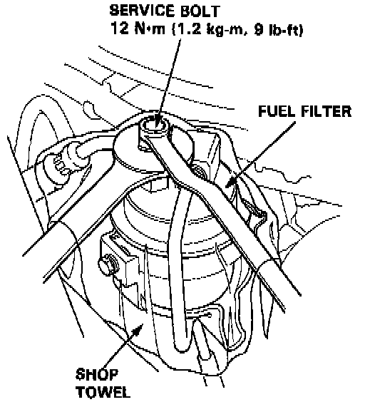
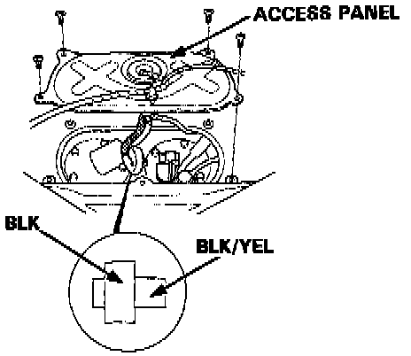
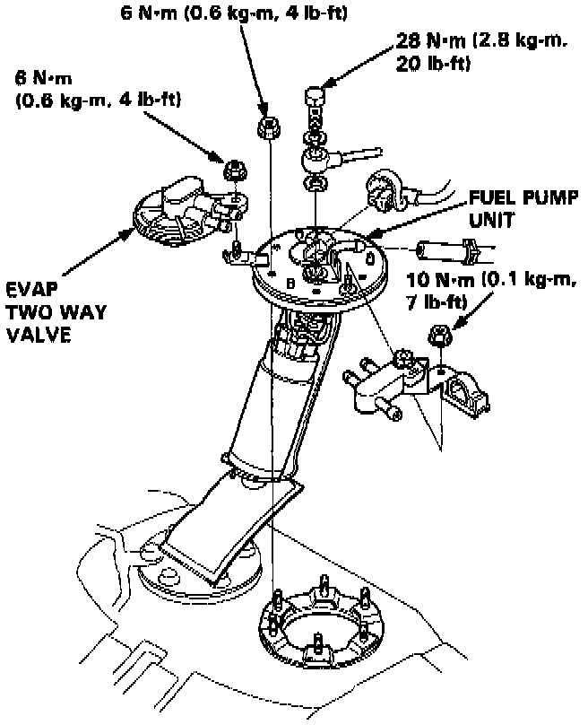

Fuel Pump: Service and Repair
WARNING: DO NOT smoke while working on the fuel system. Keep open flame away from your work area. Make sure the engine is OFF before relieving fuel pressure.
NOTE: The factory radio has a coded theft protection circuit. Obtain the anti-theft code number before disconnecting the battery cable.

1. Loosen the fuel system service bolt to relieve fuel pressure.

2. Remove the rear seats and the maintenance access cover beneath the rear seat bottom cushion.

3. Disconnect the fuel lines and electrical connector.
4. Remove the fuel pump mounting nuts.
5. Remove the fuel pump from the tank.
6. Re-assemble in reverse order with new aluminum sealing washers on the banjo bolt.
7. Torque pump mounting nuts to: 6 Nm (4 lb-ft)
8. Torque banjo bolt to: 28 Nm (20 lb-ft)